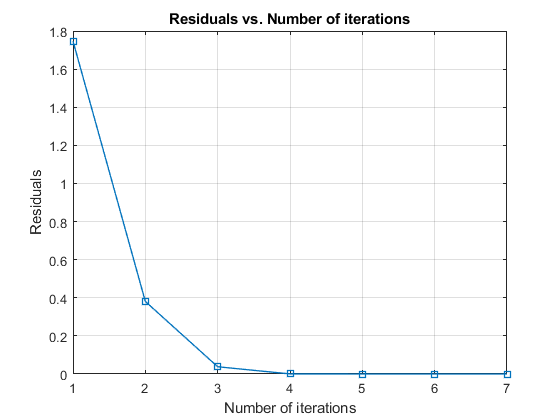
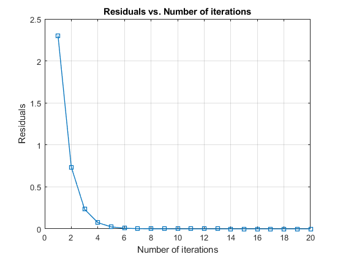
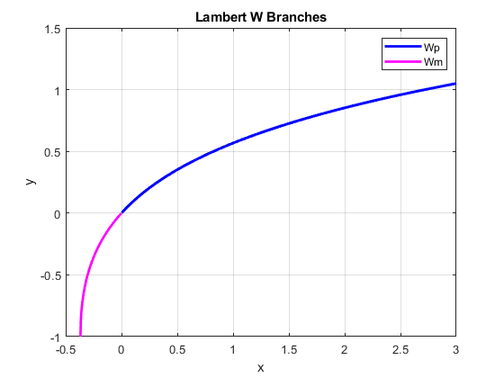
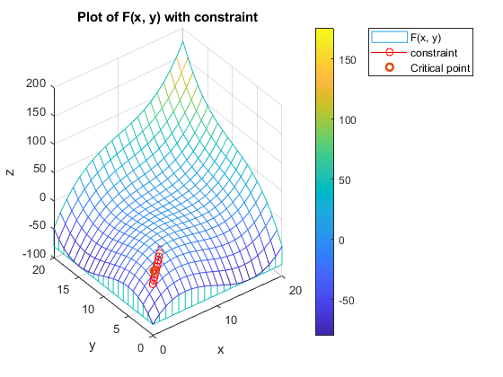
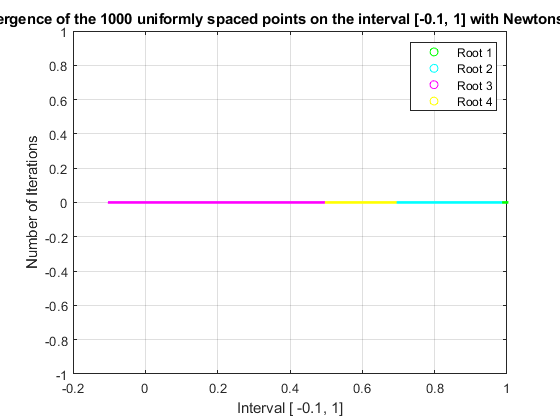

Contents
ASSIGNMENT 2
QUESTION 1
QUESTION 2
clear all, close all;
f = @(x)cosh(x)+cos(x)-3;
df = @(x)sinh(x)-sin(x);
x0 = 3;
maxiter = 20;
tol = eps;
[x, iterates, residuals] = newton(f, df, x0, maxiter, tol);
order_of_convergence = log(residuals(3:end) - x ./ residuals(2:end-1) - x ) ./ log(residuals(2:end-1) - x ./ residuals(1:end-2) - x);
figure;
plot(1:length(residuals), residuals, 'square-', 'LineWidth', 1);
title('Residuals vs. Number of iterations');
xlabel('Number of iterations');
ylabel('Residuals');
grid on;
fprintf('Estimated root: x = %.6f\n', x);
fprintf('Order of Convergence: %.4f\n', order_of_convergence(end));
fprintf(['Additional comments: It can be seen in the graph that the magnitude ' ...
'of the residuals, in this exercise, falls rapidly as the iterations ' ...
'increase. Thus, by the fifth iteration, the residual has practically ' ...
'converged to zero. \n'])
Estimated root: x = 1.857921
Order of Convergence: 1.9884
Additional comments: It can be seen in the graph that the magnitude of the residuals, in this exercise, falls rapidly as the iterations increase. Thus, by the fifth iteration, the residual has practically converged to zero.

QUESTION 3
clear all, close all;
f = @(x) cosh(x) + cos(x) - 2;
df = @(x) sinh(x) - sin(x);
x0 = 3;
maxiter = 20;
tol = eps;
[x, iterates, residuals] = newton(f, df, x0, maxiter, tol);
order_of_convergence = log(residuals(3:end) - x ./ residuals(2:end-1) - x ) ./ log(residuals(2:end-1) - x ./ residuals(1:end-2) - x);
figure;
plot(1:length(residuals), residuals, 'square-', 'LineWidth', 1);
title('Residuals vs. Number of iterations');
xlabel('Number of iterations');
ylabel('Residuals');
grid on;
fprintf('Estimated root: x = %.6f\n', x);
fprintf('Order of Convergence: %.4f\n', order_of_convergence(end));
fprintf(['Additional comments: It can be seen in the graph that the magnitude ' ...
'of the residuals, in this exercise, falls rapidly as the iterations ' ...
'increase. Thus, by the eighth iteration, the residual has practically ' ...
'converged to zero. \n'])
Estimated root: x = 0.009730
Order of Convergence: 1.0778
Additional comments: It can be seen in the graph that the magnitude of the residuals, in this exercise, falls rapidly as the iterations increase. Thus, by the eighth iteration, the residual has practically converged to zero.

QUESTION 4
QUESTION 5
x_inv = - 0.1;
try
r_inv = Wp(x_inv);
catch
fprintf('Error!!! Wp(%f) is invalid.\n', x_inv);
end
x_inv = - (1/exp(1)) - 0.1;
try
r_inv = Wm(x_inv);
catch
fprintf('Error!!! Wm(%f) is invalid.\n', x_inv);
end
clear all, close all;
x = linspace(-(1/exp(1)), 3, 1000);
y1 = zeros(size(x));
y2 = zeros(size(x));
for i = 1:length(x)
if -(1/exp(1)) <= x(i) && x(i) < 0
y2(i) = Wm(x(i));
y1(i) = NaN;
else
y1(i) = Wp(x(i));
y2(i) = NaN;
end
end
figure;
plot(x, y1, 'b', 'LineWidth', 2);
hold on;
plot(x, y2, 'm', 'LineWidth', 2);
xlabel('x');
ylabel('y');
title('Lambert W Branches');
legend('Wp', 'Wm');
grid on;
hold off;
fprintf(['Additional comments: In the graph, you can clearly see the ' ...
'branching of the Lambert function. On the one hand, the magenta color ' ...
'allows us to see how the function comes from -1/e until it hits zero ' ...
'through the non-main branch. After that, the main branch resumes ' ...
'(blue color) for all values greater than zero. \n'])
By hypothesis, no possible to obtain Wp or W0 because -1.000000e-01 is not >= 0.
Error!!! Wp(-0.100000) is invalid.
By hypothesis, no possible to obtain Wm because -4.678794e-01 is not >= (-1/e) and < 0.
Error!!! Wm(-0.467879) is invalid.
Additional comments: In the graph, you can clearly see the branching of the Lambert function. On the one hand, the magenta color allows us to see how the function comes from -1/e until it hits zero through the non-main branch. After that, the main branch resumes (blue color) for all values greater than zero.

QUESTION 6
coef = [0.01, 1000, 0.01];
roots_r1 = roots(coef);
r1 = max(roots_r1);
fprintf('Estimated root for r1: x = %.15f\n', r1);
f = @(x) 0.01*x.^2 + 1000*x + 0.01;
df = @(x) 0.02*x + 1000;
x0 = 0.0001;
tol = eps;
maxiter = 20;
[r2, ~, ~] = newton(f, df, x0, maxiter, tol);
fprintf('Estimated root for r2: x = %.15f\n', r2);
a = 0.01;
b = 1000;
c = 0.01;
discriminant = b^2 - 4*a*c;
r3 = (-b + sqrt(discriminant)) / (2*a);
fprintf('Estimated root for r3: x = %.15f\n', r3);
fprintf(['Additional comments: First of all, in order to observe the change ' ...
'between using one method or the other, we have to display the answer ' ...
'to approximately 15 decimal places. By observing and analyzing the ' ...
'result, we can see that both the use of the Matlab function "roots" ' ...
'and the use of Newtons method have an identical magnitude when ' ...
'displayed to 15 decimal places. This shows the accuracy of Newtons ' ...
'algorithm for finding roots. On the other hand, we can see that when ' ...
'using the quadratic formula, the result changes by several decimal ' ...
'places. In other words, it is not as accurate as the first two methods ' ...
'used in this exercise. \n']);
Estimated root for r1: x = -0.000010000000001
Estimated root for r2: x = -0.000010000000001
Estimated root for r3: x = -0.000010000002248
Additional comments: First of all, in order to observe the change between using one method or the other, we have to display the answer to approximately 15 decimal places. By observing and analyzing the result, we can see that both the use of the Matlab function "roots" and the use of Newtons method have an identical magnitude when displayed to 15 decimal places. This shows the accuracy of Newtons algorithm for finding roots. On the other hand, we can see that when using the quadratic formula, the result changes by several decimal places. In other words, it is not as accurate as the first two methods used in this exercise.
QUESTION 7
clear all, close all;
L = @(x) x(1).^3 + x(2).^3 + 3*x(1)*x(1) + x(3)*((x(1) - 3).^2 + (x(2) - 3).^2 - 9);
f = @(x) [3*x(1).^2 + 3*x(2) + 2*x(3)*(x(1) - 3), 3*x(2).^2 + 3*x(1) + 2*x(3)*(x(2) - 3), (x(1) - 3).^2 + (x(2) - 3).^2 - 9];
df = @(x) [6*x(1) + 2*x(3), 3, 2*(x(1) - 3); 3, 6*x(2) + 2*x(3), 2*(x(2) - 3); 2*(x(1) - 3), 2*(x(2) - 3), 0];
init_guess = [0; 0; 0];
maxiter = 100;
tol = eps;
[x_crit, ~, ~] = newton(f, df, init_guess, maxiter, tol);
fprintf('Critical point: [ x = %.5f , y = %.5f ] \n', x_crit(1), x_crit(2));
xtrem_val = x_crit(1).^3 + x_crit(2).^3 + 3 * x_crit(1) * x_crit(2);
fprintf('Extreme Value: %.5f \n', xtrem_val)
figure;
x1 = -4:0.4:4;
y1 = x1;
[X1,Y1] = meshgrid(x1);
Z1 = X1.^3 + Y1.^3 + 3*X1.*Y1;
meshz(Z1);
x2 = 0:0.50:7;
y2 = x2;
z2 = (x2 - 3).^2 - (y2 - 3).^2 - 9;
hold on;
plot3(x2, y2, z2,'-o', 'Color', 'r');
xlabel('x');
ylabel('y');
zlabel('z');
colorbar;
title('Plot of F(x, y) with constraint');
grid on;
scatter3(x_crit(1), x_crit(2), xtrem_val, 'Marker', 'o', 'Color', 'g', 'LineWidth', 2);
legend('F(x, y)', 'constraint', 'Critical point');
fprintf(['The results obtained and the results observed in the graph seem ' ...
'correct. It was a great learning experience to observe how ' ...
'using a method to find roots, such as Newtons method, of a certain ' ...
'function, can be used to find critical points. One disadvantage, ' ...
'which I realized in this excercise, is that a near local maxima or ' ...
'local minima, due to oscillation, may cause to a slow ' ...
'convergence.\n']);
Critical point: [ x = 0.87868 , y = 0.87868 ]
Extreme Value: 3.67305
The results obtained and the results observed in the graph seem correct. It was a great learning experience to observe how using a method to find roots, such as Newtons method, of a certain function, can be used to find critical points. One disadvantage, which I realized in this excercise, is that a near local maxima or local minima, due to oscillation, may cause to a slow convergence.

QUESTION 8
clear all, close all;
g = @(x) 4*x - 4*x.^2;
interval = linspace(-0.1, 1, 1000);
max_iterations = 100;
tol = 1e-6;
con_roots = zeros(1000, 1);
r1 = 0.45;
r2 = 0.65;
r3 = 0.3;
r4 = 0.9;
roots = [r1, r2, r3, r4];
ent = cell(length(roots), 1);
hand = zeros(length(roots), 1);
for i = 1:1000
x0 = interval(i);
[x, iterates, residuals] = newton(@(x)g(x) - x0, @(x) 4 - 8 * x, x0, max_iterations, tol);
if abs(g(x) - x0) < tol
[~, index] = min(abs(x - roots));
con_roots(i) = index;
end
end
colors = ['g', 'c', 'm', 'y'];
for i = 1:1000
if con_roots(i) > 0
plot(interval(i), 0, '.', 'Color', colors(con_roots(i)));
hold on;
end
end
xlabel('Interval [ -0.1, 1]');
ylabel('Number of Iterations');
title(['Convergence of the 1000 uniformly spaced points on the interval ' ...
'[-0.1, 1] with Newtons Method']);
for i = 1:length(roots)
ent{i} = sprintf('Root %d', i);
hand(i) = plot(NaN, NaN, 'o', 'Color', colors(i));
end
legend(hand, ent);
grid on;
fprintf('Counts of points converging to each root:\n');
for i = 1:length(roots)
fprintf('Root %d: %d points\n', i, sum(con_roots == i));
end
fprintf(['Newtons method always converges to the root nearest the initial ' ...
'condition: From the plot, we can observe that this claim is generally ' ...
'true. Points tend to converge to the root nearest their initial ' ...
'condition.\n']);
fprintf(['Each of the four roots attracts the same number of ' ...
'iterations.\n']);
Counts of points converging to each root:
Root 1: 10 points
Root 2: 265 points
Root 3: 545 points
Root 4: 180 points
Newtons method always converges to the root nearest the initial condition: From the plot, we can observe that this claim is generally true. Points tend to converge to the root nearest their initial condition.
Each of the four roots attracts the same number of iterations.
